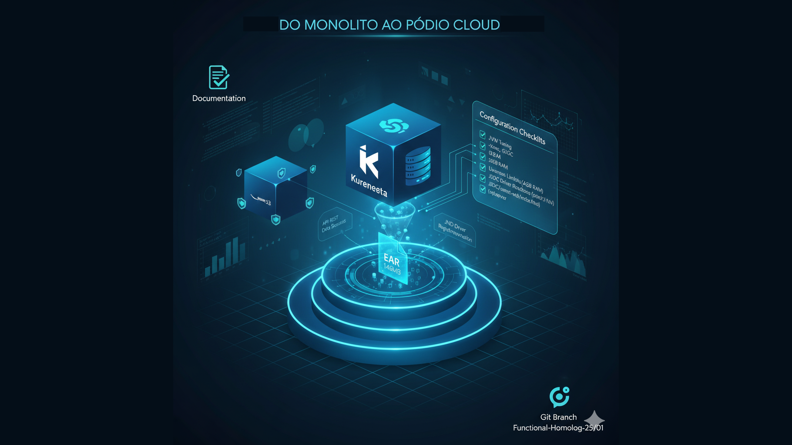

A Anatomia de um Deploy de Sucesso: Do Caos do Legado à Estabilidade no Kubernetes

Introdução
No artigo anterior (25/01), mostrei como separamos o front-end no S3 e o backend no EKS. Mas nem tudo foram flores. Hoje vou revelar a parte que ninguém vê: os erros que quebravam a imagem, o diagnóstico cirúrgico e a colaboração que transformou caos em estabilidade.
Parte 1: O Chamado e o Inventário do Caos
O projeto não é apenas um sistema; é um monolito vivo de 146MB que sustenta operações críticas. Quando assumi o projeto às pressas, o cenário era de alta pressão e entrega imediata. O primeiro passo não foi codificar, mas sim entender onde estávamos pisando.
1.1. A Mentalidade de Transparência
Como destacado na minha reunião de alinhamento com o Team Leader, a proatividade em manter a Wiki e os inventários atualizados foi o que permitiu que não perdêssemos o controle durante a transição. Versionar e documentar não são tarefas secundárias; são o que separa um deploy de sucesso de um "CrashLoop" infinito.
Lição aprendida:
"A documentação não é apenas para os outros; é para você mesmo daqui a 3 dias, quando estiver debugando às 2 da manhã."
1.2. O Diagnóstico do Ambiente (WildFly no EKS)
Ao tentarmos mover esse gigante para o Kubernetes (EKS), enfrentamos o primeiro grande vilão: a configuração de módulos JDBC. O sistema parava no erro WFLYJCA0041, uma falha ao carregar o módulo do SQL Server.
Stack Trace típico:
WFLYJCA0041: Failed to load module for driver [com.microsoft.sqlserver]
Caused by: org.jboss.modules.ModuleNotFoundException: com.microsoft.sqlserver
O que aprendemos aqui:
1. Imutabilidade no Kubernetes
No Kubernetes, o seletor do Deployment é imutável. Tentar mudar nomes de app no meio do caminho sem limpar o ambiente antigo gera conflitos que travam o pipeline.
2. Configuração via CLI
Para o WildFly carregar o banco corretamente, não basta o arquivo estar na pasta; o driver precisa ser registrado formalmente via JBoss CLI no standalone.xml.
3. Dependência de Segredos
A desativação de segredos externos sem a devida injeção de variáveis de ambiente (WF_DS_URL) interrompe o pool de conexão no nascimento do Pod.
1.3. O Fator Humano
Assumir um legado é emocionante e estressante ao mesmo tempo. A Parte 1 dessa jornada me ensinou que, antes de ajustar o Dockerfile, precisamos ajustar o alinhamento com o time. Admitir que "a cabeça zonza" faz parte do processo ajuda a focar na qualidade em vez de apenas subir versões que quebram as imagens.
Parte 2: A Cirurgia no Dockerfile e a Estabilização do Pódio
Após entender o caos inicial, o foco mudou para a resolução técnica. Não bastava o sistema rodar; ele precisava ser resiliente, performático e, acima de tudo, funcional para quem desenvolve na ponta.
2.1. Resolvendo o Enigma do Módulo JDBC
O erro WFLYJCA0041 era o nosso maior bloqueio. Descobrimos que o problema estava na inconsistência entre o arquivo físico e a configuração lógica.
Renomeação Estratégica:
No Dockerfile, o driver mssql-jdbc-7.2.2.jre8.1.jar é renomeado para mssql-jdbc-8.4.1.jre8.jar para garantir a compatibilidade com a estrutura de módulos.
# Módulo JDBC SQL Server
RUN mkdir -p /opt/jboss/wildfly/modules/system/layers/base/com/microsoft/sqlserver/main
COPY mssql-jdbc-7.2.2.jre8.1.jar \
/opt/jboss/wildfly/modules/system/layers/base/com/microsoft/sqlserver/main/mssql-jdbc-8.4.1.jre8.jar
COPY module.xml \
/opt/jboss/wildfly/modules/system/layers/base/com/microsoft/sqlserver/main/
Registro de Driver:
Implementamos o registro formal do driver via JBoss CLI antes da criação do Datasource. Sem o comando /subsystem=datasources/jdbc-driver=sqlserver:add, o WildFly não conseguia vincular o módulo ao pool de conexões.
# Script CLI para registrar o driver
/subsystem=datasources/jdbc-driver=sqlserver:add( \
driver-name=sqlserver, \
driver-module-name=com.microsoft.sqlserver, \
driver-class-name=com.microsoft.sqlserver.jdbc.SQLServerDriver, \
driver-xa-datasource-class-name=com.microsoft.sqlserver.jdbc.SQLServerXADataSource \
)
2.2. Otimização do Pool de Conexões e Undertow
Para garantir que o sistema suportasse a carga de homologação, configuramos um pool de conexões robusto diretamente no standalone.xml:
Dimensionamento:
Definimos min-pool-size=10 e max-pool-size=50, garantindo que o sistema não travasse por falta de conexões com o SQL Server.
<datasource jndi-name="java:jboss/datasources/AppDS"
pool-name="AppDS"
enabled="true"
use-java-context="true">
<connection-url>${env.WF_DS_URL}</connection-url>
<driver>sqlserver</driver>
<pool>
<min-pool-size>10</min-pool-size>
<max-pool-size>50</max-pool-size>
<prefill>true</prefill>
</pool>
<security>
<user-name>${env.WF_DS_USER}</user-name>
<password>${env.WF_DS_PASS}</password>
</security>
<validation>
<validate-on-match>true</validate-on-match>
<background-validation>false</background-validation>
</validation>
</datasource>
Filtros Undertow:
Adicionamos filtros de CORS e políticas de cache para JavaScript (essenciais para o AngularJS acoplado), garantindo que os recursos estáticos fossem servidos de forma otimizada pelo container.
<subsystem xmlns="urn:jboss:domain:undertow:12.0">
<server name="default-server">
<host name="default-host" alias="localhost">
<filter-ref name="server-header"/>
<filter-ref name="x-powered-by-header"/>
<filter-ref name="cache-control"/>
</host>
</server>
<filters>
<response-header name="server-header"
header-name="Server"
header-value="WildFly"/>
<response-header name="cache-control"
header-name="Cache-Control"
header-value="max-age=86400"/>
</filters>
</subsystem>
2.3. Validação e Saúde do Container
Não deixamos o sucesso ao acaso. O Dockerfile foi equipado com mecanismos de autoverificação:
Script de Validação Interna:
Criamos o validate.sh, que checa a existência dos módulos e a integridade do standalone.xml ainda durante o build da imagem.
#!/bin/bash
# validate.sh - Verifica se os módulos foram criados corretamente
echo "Validando instalação do WildFly..."
# Verifica módulo JDBC
if [ ! -f /opt/jboss/wildfly/modules/system/layers/base/com/microsoft/sqlserver/main/mssql-jdbc-8.4.1.jre8.jar ]; then
echo "ERRO: Módulo JDBC SQL Server não encontrado!"
exit 1
fi
# Verifica module.xml
if [ ! -f /opt/jboss/wildfly/modules/system/layers/base/com/microsoft/sqlserver/main/module.xml ]; then
echo "ERRO: module.xml do SQL Server não encontrado!"
exit 1
fi
# Verifica standalone.xml
if ! grep -q "com.microsoft.sqlserver" /opt/jboss/wildfly/standalone/configuration/standalone.xml; then
echo "AVISO: standalone.xml não contém referência ao driver SQL Server"
fi
echo "Validação concluída com sucesso!"
exit 0
Healthcheck Ativo:
Implementamos um comando que monitora a porta de gerenciamento (9990) do WildFly, garantindo que o Kubernetes saiba exatamente quando o Pod está pronto para receber tráfego.
apiVersion: apps/v1
kind: Deployment
metadata:
name: app-backend
spec:
template:
spec:
containers:
- name: wildfly
image: app-backend:latest
ports:
- containerPort: 8080
name: http
- containerPort: 9990
name: management
livenessProbe:
httpGet:
path: /
port: 9990
initialDelaySeconds: 120
periodSeconds: 10
readinessProbe:
httpGet:
path: /
port: 9990
initialDelaySeconds: 60
periodSeconds: 5
2.4. O Resultado: Autonomia para o Desenvolvedor
A maior vitória desta etapa foi entregar uma Branch Funcional. Agora, o desenvolvedor da consultoria pode realizar o build local sabendo que o ambiente é um espelho fiel da homologação. Resolvemos o problema das "imagens quebradas" através de testes pequenos e sucessivos, como sugerido pelo Team Leader na nossa reunião de alinhamento.
Parte 3: O Legado da Colaboração – Muito Além do Código
Chegar ao final de um ciclo de deploy tão intenso traz uma reflexão que vai além dos bits e bytes. A entrega da branch funcional em homologação não foi apenas uma vitória técnica; foi o resultado de uma mudança de postura diante dos desafios.
3.1. Transparência: A Chave para Destravar Projetos
Como discutimos na reunião com o Team Leader (TL) e o Manager Delivery, o "estresse" é um subproduto natural da pressão, mas ele só se torna destrutivo se não houver transparência. Ao abrir o jogo sobre as dificuldades técnicas e ouvir os feedbacks sobre a "velocidade vs. qualidade", conseguimos ajustar o ponteiro.
Aprendizado:
"É melhor subir um degrau sólido de cada vez do que tentar saltar uma escada e quebrar a imagem no caminho."
3.2. O Valor da Parceria Técnica
Ninguém faz nada sozinho em sistemas desta complexidade. A colaboração com o meu Team Leader foi vital para:
Validar a Arquitetura:
Ter um segundo olhar sobre o Dockerfile e o registro de JNDI evitou que erros silenciosos chegassem à produção.
Escalabilidade Humana:
Com o ambiente estabilizado, a consultoria externa agora tem autonomia total. Isso me libera para focar na evolução do sistema, em vez de atuar como "suporte de infra" o dia todo.
3.3. O impacto da entrega técnica
Quando a liderança do projeto fala em "entrar para a história" com uma iniciativa dessas, está falando de provar que modernização de legado em Kubernetes é viável. Colocar um sistema antigo para rodar de forma estável num cluster EKS demonstra que a entrega combina inteligência e resiliência, não apenas horas de desenvolvimento.
3.4. Lições Aprendidas (Resumo Executivo)
1. Afinidade de Sessão:
Vital para front-ends acoplados em containers. Sem sticky sessions, o usuário perde o contexto a cada requisição.
2. Configuração de Pool de Conexão:
O uso de scripts CLI para garantir que o Datasource suba com os parâmetros de performance corretos (min-pool-size=10, max-pool-size=50).
3. Resiliência:
O valor de admitir falhas rápidas para corrigir com precisão. Cada erro foi uma oportunidade de aprendizado.
4. Documentação Viva:
Manter a Wiki atualizada não é burocracia; é a diferença entre o sucesso e o caos.
5. Testes Incrementais:
Como sugerido pelo TL: "Faça pequenos testes, não tente subir tudo de uma vez." Isso evitou retrabalho e frustração.
Conclusão: O Próximo Nível
O Artigo 70 encerra-se com a branch funcional, mas a jornada de modernização continua. A lição que fica para os meus seguidores e colegas é:
✅ Documente cada decisão técnica
✅ Colabore com transparência e humildade
✅ Não tenha medo de refazer para fazer certo
O sucesso financeiro e o reconhecimento são consequências de um ambiente que funciona e de uma equipe que confia um no outro.
Arquitetura Final Estabilizada
┌──────────────────────────────────────────────────────┐
│ Amazon EKS Cluster │
│ ┌────────────────────────────────────────────────┐ │
│ │ Pod: app-backend │ │
│ │ ┌──────────────────────────────────────────┐ │ │
│ │ │ WildFly 26.1.3.Final │ │ │
│ │ │ ├─ JDBC Module (SQL Server) │ │ │
│ │ │ ├─ Datasource (JNDI: AppDS) │ │ │
│ │ │ ├─ Pool: 10-50 conexões │ │ │
│ │ │ ├─ Healthcheck: porta 9990 │ │ │
│ │ │ └─ CORS Filter para S3 │ │ │
│ │ └──────────────────────────────────────────┘ │ │
│ │ Resources: │ │
│ │ Requests: 3Gi RAM, 1 CPU │ │
│ │ Limits: 4Gi RAM, 2 CPU │ │
│ └────────────────────────────────────────────────┘ │
│ │
│ Service: app-backend-svc │
│ Type: LoadBalancer │
│ Port: 8080 │
└──────────────────────────────────────────────────────┘
▲
│ HTTPS (CORS)
│
┌───────────────────┴──────────────────┐
│ Amazon S3 + CloudFront │
│ ┌────────────────────────────────┐ │
│ │ Frontend (AngularJS 1.5) │ │
│ │ └─ Gulp build pipeline │ │
│ │ └─ Vendor injection order │ │
│ └────────────────────────────────┘ │
└──────────────────────────────────────┘
Próximo artigo: Como transformamos essa base estável em um ambiente de CI/CD completo com GitLab Pipelines e Terraform.
#Kubernetes #WildFly #DevOps #Java #Modernização #EKS #JDBC #Deploy #Legado #Colaboração
Dicionário de Termos Técnicos
- WFLYJCA0041
- Código de erro do WildFly indicando falha ao carregar módulo JDBC.
- EKS (Elastic Kubernetes Service)
- Serviço gerenciado de Kubernetes na AWS.
- Pod
- Menor unidade de deployment no Kubernetes, contendo um ou mais containers.
- JNDI (Java Naming and Directory Interface)
- API Java para localizar recursos como datasources.
- JDBC (Java Database Connectivity)
- API Java para conexão e operações com bancos de dados.
- JBoss CLI
- Interface de linha de comando para configuração do WildFly/JBoss.
- Datasource
- Pool de conexões configurado no servidor de aplicação.
- Healthcheck
- Verificação automática do estado de saúde de um container/pod.
- Liveness Probe
- Teste que verifica se o container está vivo e funcionando.
- Readiness Probe
- Teste que verifica se o container está pronto para receber tráfego.
- CrashLoop
- Estado em que um pod Kubernetes reinicia continuamente devido a falhas.